| On a particularly warm day in February, we
decided to go to the Wichita Mountains for some hiking, rock climbing, and
sight-seeing. Eric, Buddy and I were joined by our friends Eric H.,
as well as our Taiwanese buddies Mavis & Yen, who are always ready for
an adventure. It was a very nice day and a good experience for
everyone. |
|
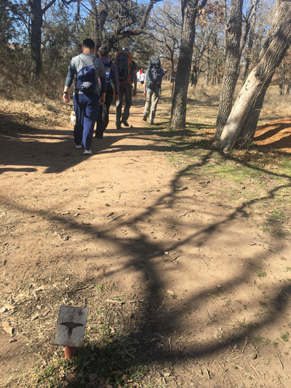 |
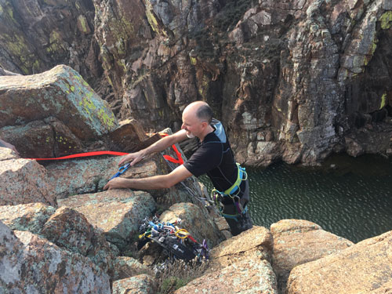 Eric, setting up the anchor for top-rope climbing. |
| Hitting the trail. (It was a very short hike!) | |
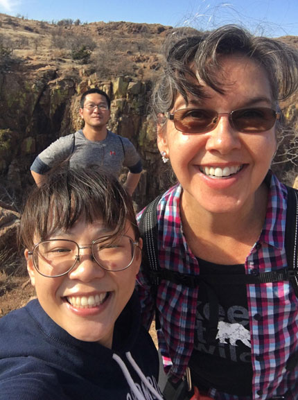 |
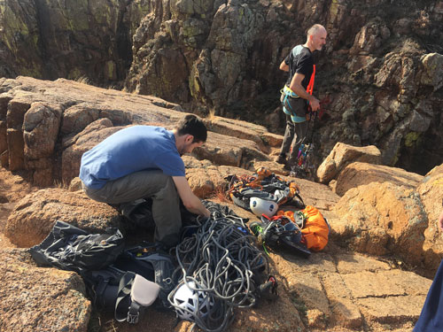 It takes a lot of gear to climb a rock! |
| Mavis is awesome at group selfies! | |
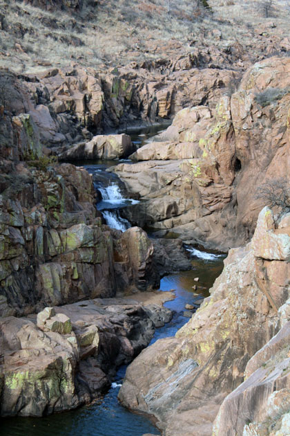 |
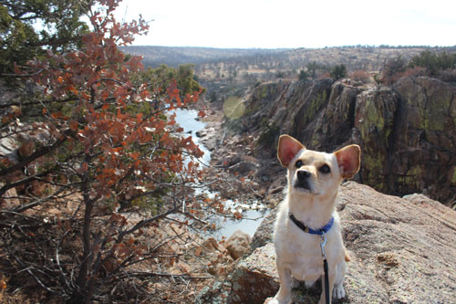 The view to the left was the stream below. Buddy was so happy to be out in nature! |
| The view to our right was this nice waterfall area. | |
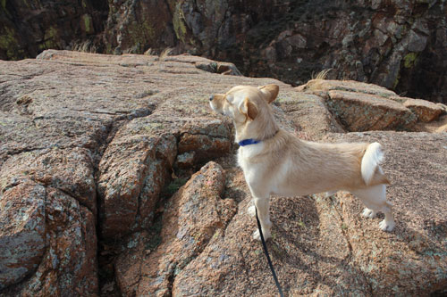 |
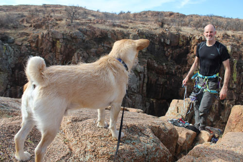 |
| Buddy, master of all that he surveys. | Also, Buddy is in charge of watching out for Eric to make sure he stays safe. |
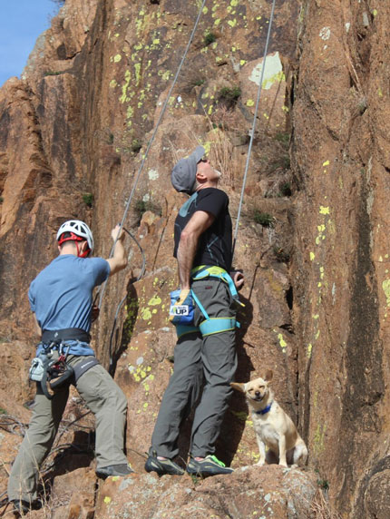 |
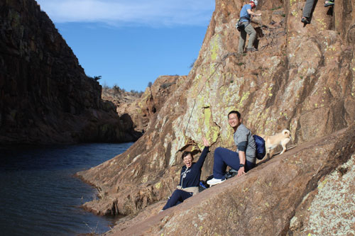 Mavis & Yen, enjoying nature. |
| Here I catch a goofy grin on Buddy's face - he loves rock climbing just like the Erics do! | |
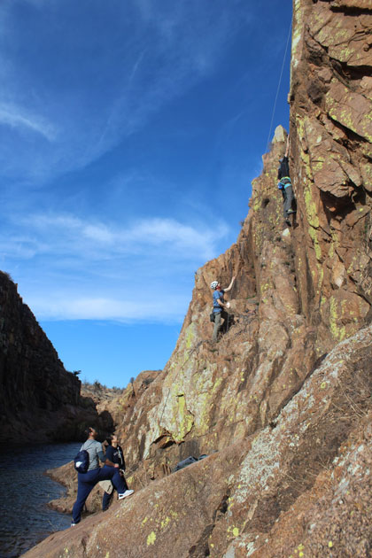 |
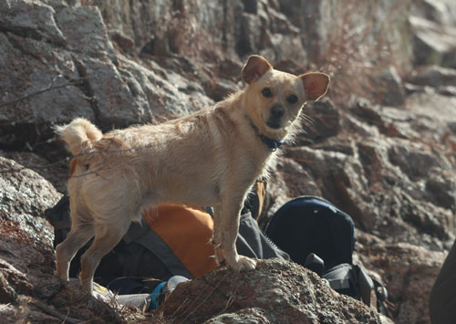 Here's Buddy, immediately after he fell into the water. He ran over
to Eric's back pack |
| Eric doesn't like me to take pictures of him on top-rope, so I'm only sharing one. | |
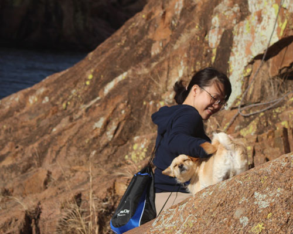 |
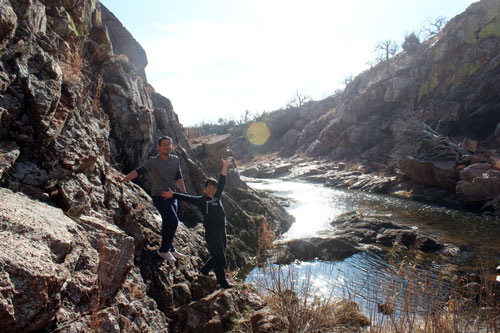 Doing a little exploring with Mavis & Yen |
| Buddy still growls at Mavis when she pets him, but only for a little while - then she wins him over! | |
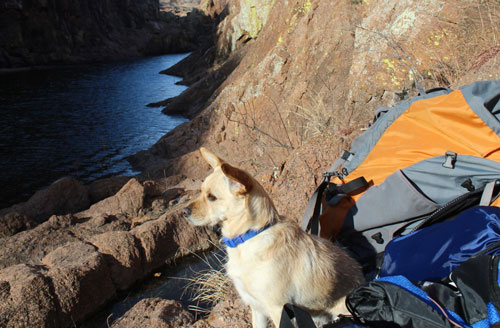 |
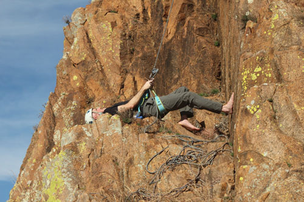 |
| Guarding the gear | Eric, finding a comfy way to belay. |
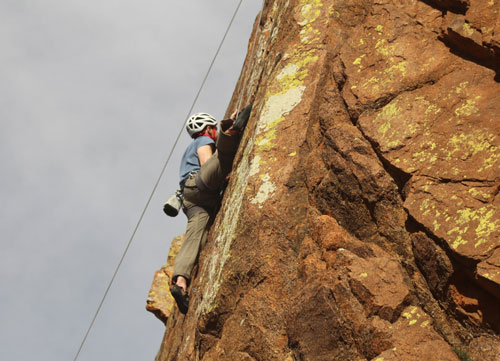 |
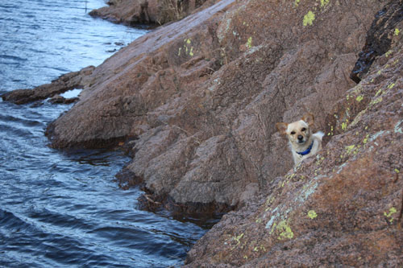 |
| Eric H is so flexible that he doesn't even realize he does these crazy moves sometimes. | Buddy, getting ready to recross the area where he just fell in a little while ago. |
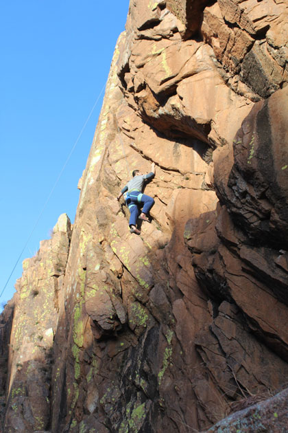 |
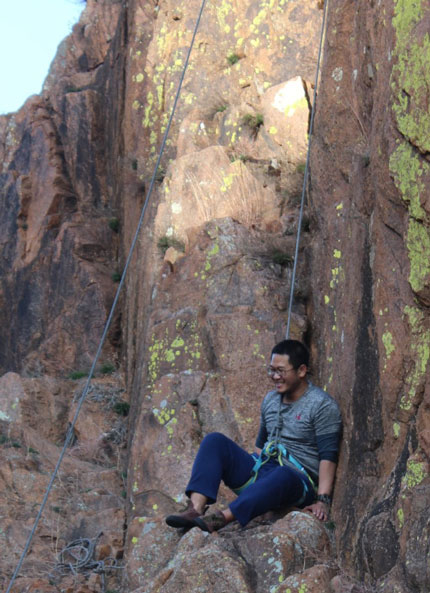 |
| Yen making his first rock climb. | I love to catch that, "I can't believe I'm still alive" smile that everyone gets after their first climb! |
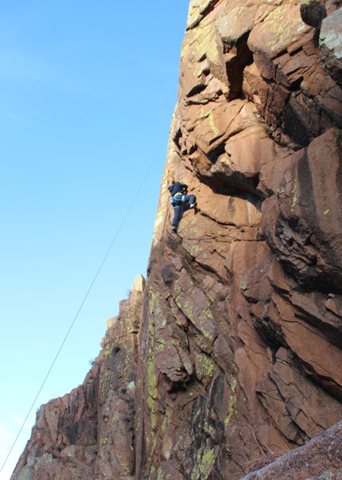 |
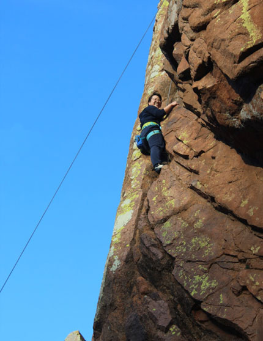 |
| Mavis on her first climb, she was fierce! | Pausing to take a look at the view, and rest her hands a bit. |
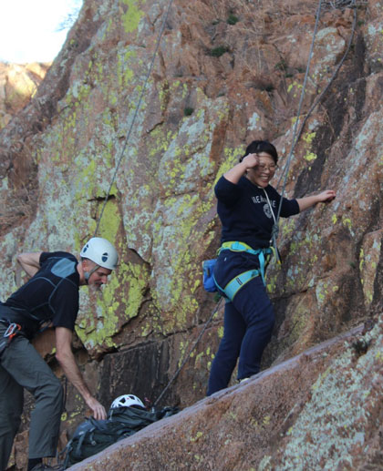 |
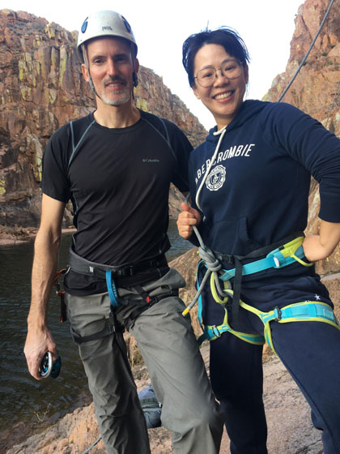 |
| There's her "happy to be alive" smile, it's a good one! | Eric & Mavis, rock climbers. |
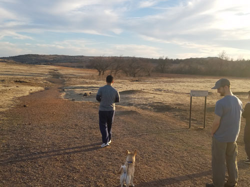 |
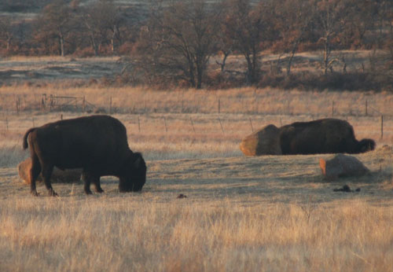 |
| Next we did some sight-seeing, which always has to include the Prairie Dog Town. | We also saw some buffalo grazing around. |
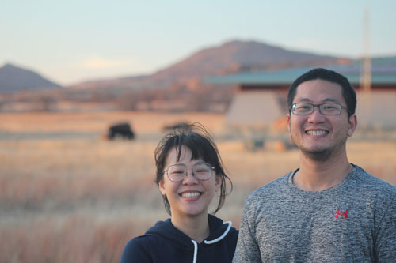 |
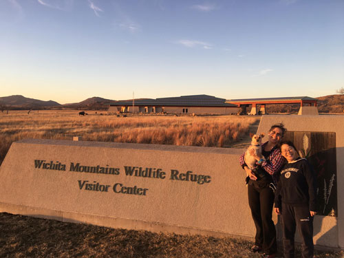 |
| Unfortunately, I could get the settings right on my camera to get the
shot I wanted. Just trust me, that's a buffalo behind them! |
Visitor center in evening light |
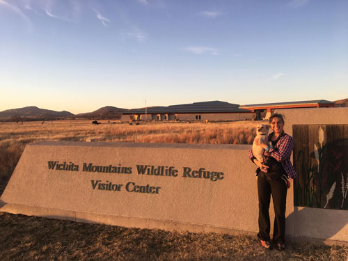 |
|
| One last shot at the visitor center before we take our tired selves back to OKC. | |